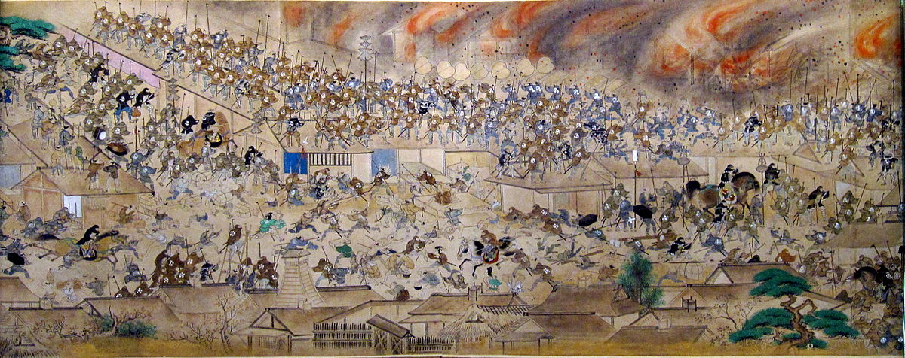
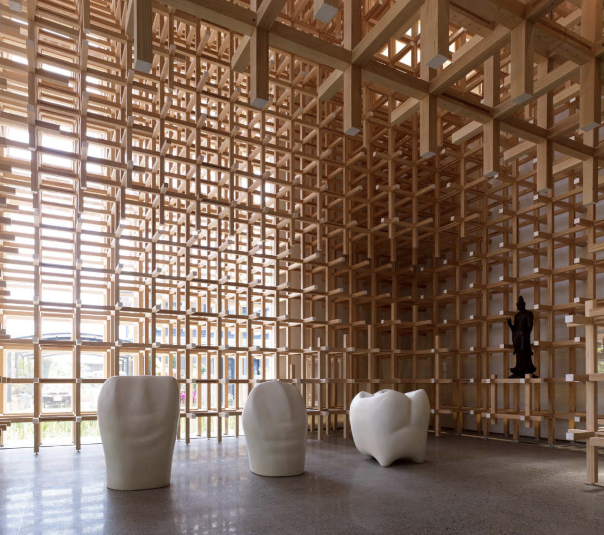
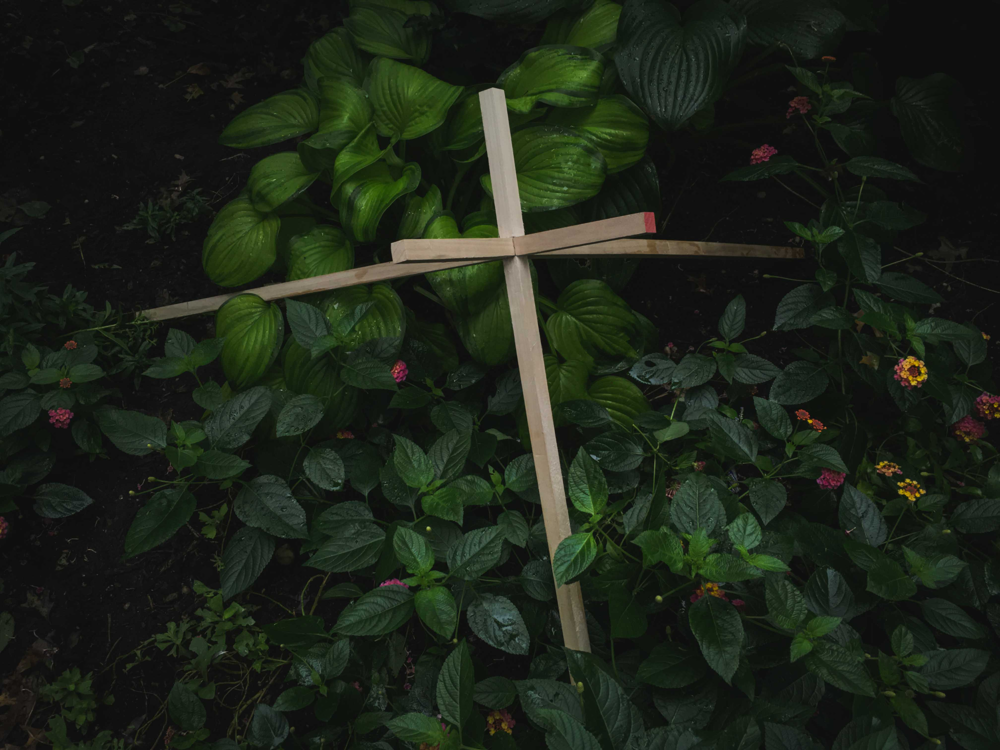
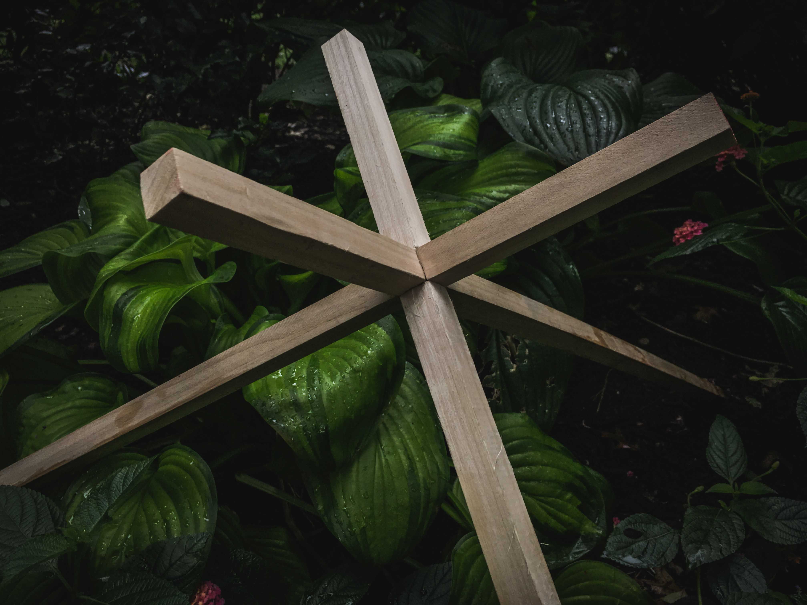
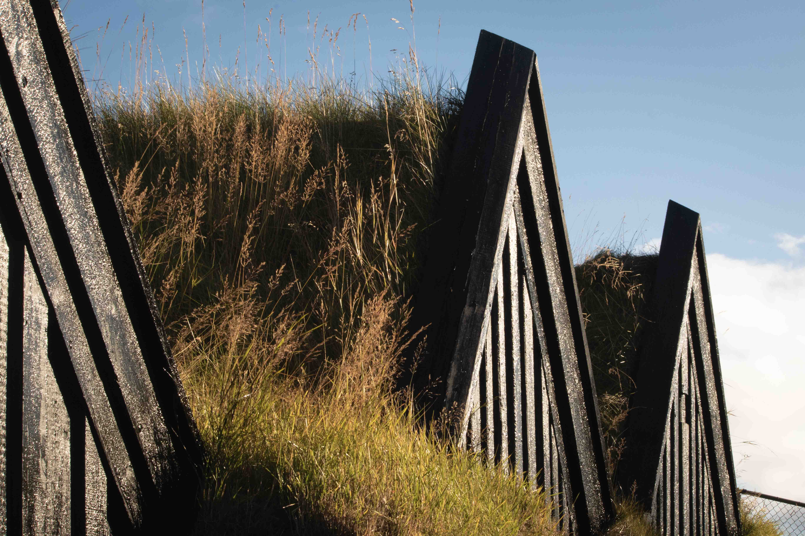
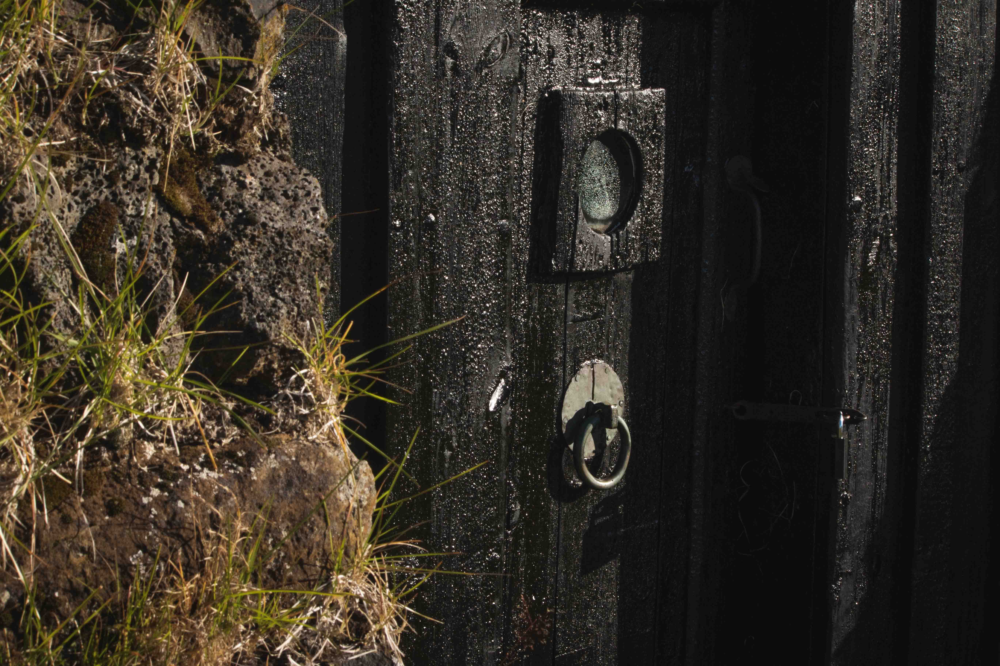
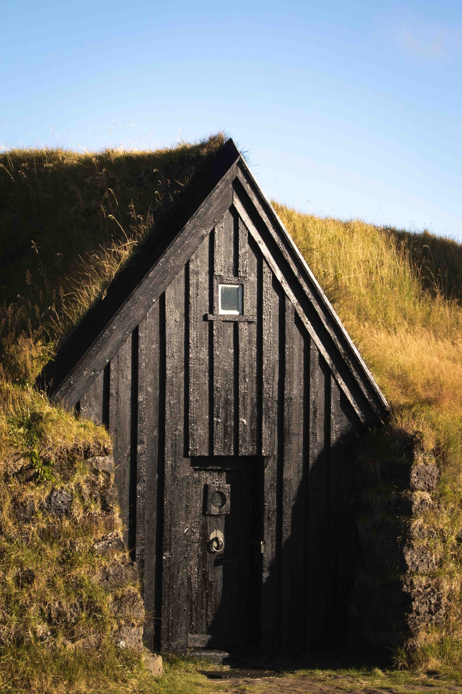

How do cultures use material to create enduring yet adaptive constructed spaces?
Ideas in Form is a short term investigative research project that explores how cultures, particularly the Jpananese, use
the natural environment to inform and construct their architectural works. The project included background research, wood-working,and photography,
and culminated in a digital protoype of an educative mobile experience regarding Japanese wood joinery.
Research

Great FIre of Meireki (1657). Woodblock print by Tashiro Yukiharu.
Fellow student Ola and I both have a keen interest in history, and used it as a starting point for identifying how different cultures
traditionally utilise materials in their construction practices. We jointly gravitated towards Japanese architecture, due to its extensive
catalog of architectural examples, and the culture's unique and deep connection to nature seen in day-to day life, religion, and even the
region of the world they live in.
We found that natural events such as Earthquakes in Japan often led to great fires. We were initially interested why the Japanese would
have such a strong use of wood in their work if fire was such a prevelant issue. However, this idea of bending with the environment, and
designing strucutres that could rapuldy return after disasted rather than fight it, was a central part of the Japanese psyche surrounding architecture.
We learned that the Japanese don't design objects that withstand nature, but instead have design values that respect nature,
allowing the core aspects of Japanese architecture to endure over time.
Japanese Joinery Through the Lens of Kengo Kuma: A 3D Study
Inspired by the findings of my previous research, I wanted to take a deeper dive into how contemporary
Japanese architects utilise traditional themes and forms. I looked into the body of work of Kengo Kuma,
renowned internationally for his respect for traditional Japanese craft and materials.

Chidori in the GC Prostho Museum Research Centre:
Though Kuma's work is a study of repition of form, I was interested in first learning more about the actual joinery used for this project.
A quote from the architect:This is architecture that originates from the system of Cidori, an old Japanese toy. Cidori is an assembly of wood sticks with joints having unique shape, which can be extended merely by twisting the sticks, without any nails or metal fittings. The tradition of this toy
has been passed on in Hida Takayama, a small town in a mountain, where many skilled craftsmen still exist.
Learning about how Cidori was made became the basis for this 3D study.
A small model was produced to learn test where specific joints would go:
The final build:


Natural Materials in the Constructed Environment: A Photographic Study of Keldur Turf Homes in Iceland
After taking a deeper dive into the use of wood in Japanese architecture, I wanted to again exapnd as a way of reinforcing the patterns I was finding. I went to Iceland to see how traditional Icelandic homes also used environmental materials in their own construction practices.
The following photographic series is a study of turf homes in Iceland, a common construction technique that began nearly 1000 years ago.
Keldur Turf Houses:
With some projections dating the structures to be much earlier,
the Keldur farm turf houses are siad to be at least 1000 years old. They are famous
for being some of the best preserved examples of icelandic turf/sod homes. They were famously
stated in the well known Njal’s Saga, and the hall strucutre is the oldest of its kind in Iceland.



Recapping Through Teaching: An Interactive Study
Throughout researching this topic, I kept coming back to the thoguth that the techniques I was studying and how they relate to one another were not documented, and hard to learn about without a lot of digging. Wanting to teach others about my findings and the values of traditional Japanese Architecture and how it can be applied today, I decided to create an educative interactive digital experience.
JOINERY OF KENGO KUMA AND ASSOCIATES: House of Wood, House of Landis a short exploration into how we can share the craft and technique of contemporary architects like Kengo Kuma who employ traditionl Japanese construction techniques. Japanese architecture is most effective when it creates a dialogue between structure and environment. I wanted to play off this idea, and design a digital experience, creating 3D forms that exist in the 2D environment many of us are most comfotable with. It was my goal to teach and inform throuhg playful interaction and exploration.
One of the things that was inspirational to be about Kuma's work is his use of traditional technique, but more importantly his subsequent repetition of form and construction. He reduces large-scale construction practices down into micro-units, which he then repeats to create complex and expansive architectual forms.
I wanted to show how these complex units/joints could be quickly scaled up to create the large pieces that Kuma has built.
Below is a walkthrough of the demo...
... And an example of the demo in action on the iPhone XS Max.